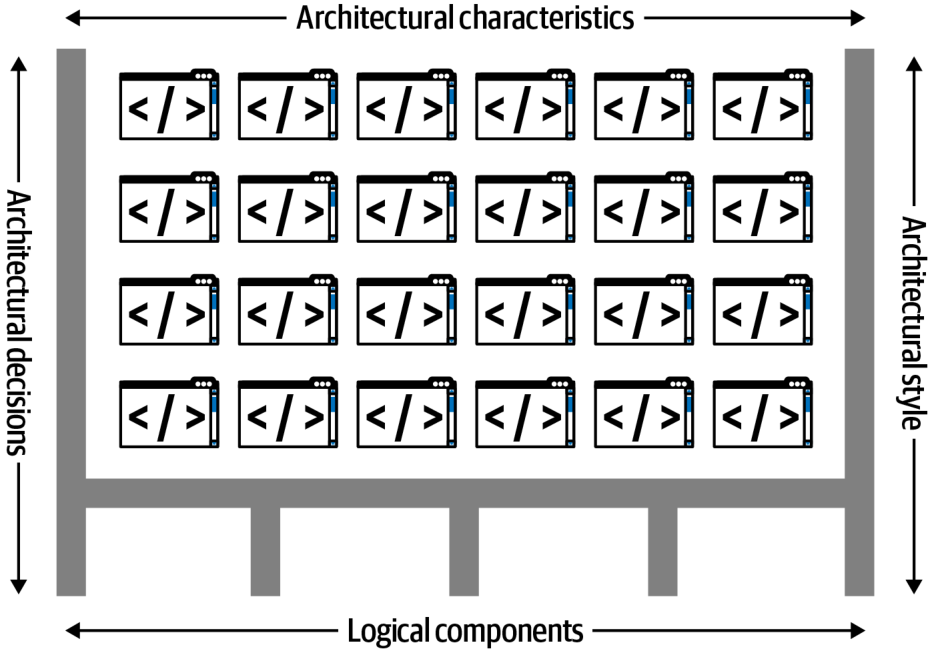
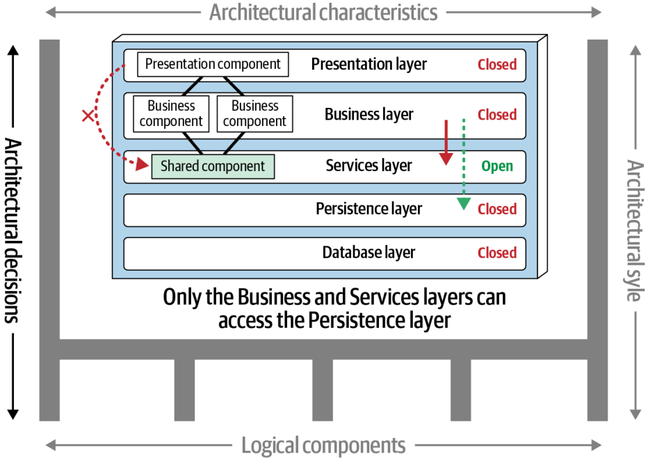

اگر این پروژه برای یادگیری معماری نرمافزار برای شما مفید بوده است، میتوانید با حمایت از آن به ادامهٔ ترجمه، تکمیل، بهروزرسانی و نگهداری این مجموعه کمک کنید. حمایت شما، چه مالی و چه با معرفی پروژه به دیگران، باعث میشود بتوانم زمان بیشتری برای توسعه و بهبود این کار اختصاص دهم.
پس به معماری نرمافزار (Software Architecture) علاقهمند شدهاید. شاید توسعهدهندهای هستید که میخواهید به گام بعدی شغلیتان برسید، یا شاید مدیر پروژهای هستید که میخواهد بداند هنگامی که معماری نرمافزارها درست کار میکنند چه اتفاقی میافتد. شاید هم «معمار اتفاقی» (Accidental Architect) باشید: کسی که تصمیمات معماری (Architecture Decisions) میگیرد —تعریفش را در ادامه میبینید— اما هنوز عنوان «معمار نرمافزار» (Software Architect) را ندارد؛ حداقل هنوز نه.
چرا باید سراغ قلمرو معماری نرمافزار رفت؟ شاید در پروژههای زیادی تجربه دارید و میخواهید عمیقتر دریابید بخشهای بزرگتر یک سیستم چگونه در کنار هم قرار میگیرند و در کنارشان با چه تعداد مصالحه (Trade-off) روبهرو هستید. اگر چنین است، معماری نرمافزار آشکارا گام بعدی شغلی شماست.
این کتاب برای همهٔ شما نوشته شده است؛ مروری است بر شغل بسیار چندوجهیِ «معمار نرمافزار».
معماران نرمافزار باید سیستمهای نرمافزاری را با تمام پیچیدگیهایشان عمیق بشناسند و تحلیل کنند و باید تصمیمات مهمِ مصالحهای بگیرند، گاهی با اطلاعات ناقص. بسیاری از توسعهدهندگان نرمافزار که نگراناند هوش مصنوعی مولد (Generative AI) آرامآرام جایشان را بگیرد، به ورود به معماری نرمافزار فکر میکنند؛ نقشی که جایگزینکردنش بسیار دشوارتر است. معماران نرمافزار دقیقاً همان نوع تصمیماتی را میگیرند که هوش مصنوعی از عهدهاش برنمیآید: ارزیابی مصالحهها در دل بافتارهای (Context) پیچیده و در حال تغییر.
معماری هم مانند بسیاری از هنرها، تنها در بافتار خودش قابل درک است. معماران تصمیماتشان را بر پایهٔ واقعیتهای محیط خود استوار میکنند. برای نمونه، یکی از اهداف بزرگ معماری نرمافزار در اواخر قرن بیستم، بهکارگیری هرچه کارآمدتر زیرساختها و منابع اشتراکی بود، چون سیستمعاملها، سرورهای برنامهٔ کاربردی، سرورهای پایگاهداده و همانند آنها همگی تجاری و بسیار گرانقیمت بودند.
در سال ۲۰۰۲، تلاش برای ساختن معماریای مانند میکروسرویسها (Microservices) هزینهای باورنکردنی داشت. تصور کنید قدمزنان وارد مرکزدادهای در سال ۲۰۰۲ میشوید و به رئیس بخش عملیات میگویید: «سلام! ایدهٔ عالیای برای یک سبک معماری انقلابی دارم؛ هر سرویس روی سختافزار منزوی خودش، همراه با پایگاهدادهٔ اختصاصی خودش اجرا میشود. ۵۰ مجوز Windows میخواهم، ۳۰ مجوز سرور برنامهٔ کاربردی دیگر، و دستکم ۵۰ مجوز سرور پایگاهداده.» امروز فقط به لطف ظهور نرمافزار آزاد (Open Source) و شیوههای مهندسیِ بهروزشدهٔ انقلاب DevOps است که میتوانیم چنین معماریهایی بسازیم. همهٔ معماریها فرآوردهٔ بافتار خودشان هستند؛ این نکته را هنگام خواندن این کتاب به یاد داشته باشید.
تعریف معماری نرمافزار
پس معماری نرمافزار چیست؟ شکل ۱-۱ نشان میدهد ما معماری نرمافزار را چگونه تصور میکنیم. این تعریف چهار بُعد دارد. معماری نرمافزار یک سیستم از یک سبک معماری (Architecture Style) بهعنوان نقطهٔ شروع تشکیل شده است و با ویژگیهای معماری (Architecture Characteristics) که سیستم باید از آنها پشتیبانی کند، مؤلفههای منطقی (Logical Components) که رفتارش را پیادهسازی میکنند، و سرانجام تصمیمات معماری که همهٔ اینها را توجیه میکنند، ترکیب شده است. ساختار سیستم را خطوط سیاهِ ضخیمی نشان میدهند که معماری را بر خود نگه داشتهاند. این بُعدها را به همان ترتیبی که معماران آنها را تحلیل میکنند، بهسرعت مرور میکنیم؛ فصلهای بعدی جزئیات بیشتری ارائه خواهند داد.

شکل ۱-۱. معماری از ساختار سیستم تشکیل شده است که با ویژگیهای معماری («-ilities»)، مؤلفههای منطقی، سبکهای معماری و تصمیمات ترکیب میشود.
ویژگیهای معماری (شکل ۱-۲) توانمندیهای یک سیستم —که معمولاً بهاختصار «-ilities» خوانده میشوند— و معیارهای موفقیت آن را تعریف میکنند: بهبیان کوتاه، اینکه سیستم باید چه کند. ویژگیهای معماری آنقدر مهماند که چندین فصل از این کتاب را صرف شناختن و تعریفکردنشان کردهایم.
شکل ۱-۲. «ویژگیهای معماری» به همان «-ilities»هایی اشاره دارد که سیستم باید از آنها پشتیبانی کند.
ویژگیهای معماری توانمندیهای سیستم را تعریف میکنند، اما مؤلفههای منطقی رفتار آن را تعریف میکنند. طراحی مؤلفههای منطقی یکی از کلیدیترین فعالیتهای ساختاری برای معماران است. در شکل ۱-۳، مؤلفههای منطقی، حوزهها، موجودیتها و گردشکارهای برنامهٔ کاربردی را میسازند.
شکل ۱-۳. مؤلفههای منطقی، رفتار سیستم را ساختار میدهند.
هنگامی که معمار، ویژگیهای معماری و مؤلفههای منطقی موردنیاز سیستم را تحلیل کرد —که هر دو بعداً با جزئیات شرح داده میشوند— آنقدر میداند که بتواند سبک معماری مناسبی را بهعنوان نقطهٔ شروعِ پیادهسازی راهحلش انتخاب کند (شکل ۱-۴).
شکل ۱-۴. انتخاب سبک معماری یعنی یافتن آسانترین مسیر پیادهسازی برای مجموعهای مشخص از الزامات.
چهارمین بُعدی که معماری نرمافزار را تعریف میکند، تصمیمات معماری است: قواعدی که مشخص میکنند سیستم باید چگونه ساخته شود. برای نمونه، معمار ممکن است تصمیم بگیرد که تنها لایههای Business و Services درون یک معماری لایهای (Layered Architecture) اجازهٔ دسترسی به پایگاهداده را داشته باشند (شکل ۱-۵) و لایهٔ Presentation را از فراخوانی مستقیم پایگاهداده باز بدارد. تصمیمات معماری، قید و محدودیتهای سیستم را شکل میدهند و به تیمهای توسعه نشان میدهند که چه چیزی مجاز است و چه چیزی نیست.

شکل ۱-۵. تصمیمات معماری، قواعدی برای ساخت سیستمها هستند.
تصمیمات معماری و شیوهٔ مستندسازی مختصر آنها را در فصل ۲۱ بررسی میکنیم.
قوانین معماری نرمافزار
وقتی ما دو مؤلف، نوشتن ویرایش نخست این کتاب را آغاز کردیم، هدف بلندپروازانهای داشتیم: امیدوار بودیم چیزهایی بیابیم که دربارهٔ معماری نرمافزار جهانشمول به نظر میرسند و آنها را بهصورت «قوانین» معماری نرمافزار (Laws of Software Architecture) درآوریم. هنگام نوشتن، چشم به راه چیزهایی بودیم که میتوانستیم ثبتشان کنیم؛ امید داشتیم شاید ۱۰ یا ۱۵ تا بیابیم. از شگفتی ما، در ویرایش نخست در نهایت تنها به دو قانون رسیدیم و در حین نوشتن ویرایش دوم، قانون دیگری هم کشف کردیم. بر وفق نیت نخستینمان، این سه قانون تا حد زیادی جهانشمولاند و بسیاری از دیدگاههای مهم را برای معمارانِ در حال کار روشن میکنند.
قانون اول معماری نرمافزار (First Law of Software Architecture) را با برخوردن پیوسته به آن آموختیم؛ و به نظرمان همین قانون به قلبِ این پرسش میزند که چرا این حقایق جهانشمول اینقدر گریزنده به نظر میرسند:
هرچه در معماری نرمافزار هست، یک مصالحه است.
هیچچیز روی یک طیف تمیز و ساده جا نمیگیرد. هر تصمیمی که یک معمار نرمافزار میگیرد باید متغیرهای زیادی را در نظر بگیرد که بسته به شرایط، مقادیر متفاوتی میگیرند. مصالحهها جوهرهٔ تصمیمات معماری نرمافزارند. اگر فکر میکنید چیزی یافتهاید که مصالحه نیست، احتمالاً فقط هنوز مصالحهاش را نیافتهاید… هنوز.
تحلیل مصالحه را نمیتوانید یک بار انجام دهید و تمامشده بدانید.
تیمها عاشق استانداردند و خوب میشد اگر معماران میتوانستند یک «گردهمایی بزرگ مصالحهها» (One Big Trade-off Jamboree) برگزار کنند و پیشفرضهای ما را—در اینکه کدام سبکهای معماری را به کار ببریم، بخشهای معماری چگونه با هم ارتباط برقرار کنند، کارکردهای اشتراکی چگونه مدیریت شوند و انبوهی از تصمیمات بغرنج دیگر—یکجا مشخص کنند. اما چنین کاری ممکن نیست، چون هر موقعیتی ایجاب میکند همهٔ آن مصالحهها را دوباره ارزیابی کنیم. (دیدهایم تیمها تلاش کنند—مثلاً پیشفرض کنند که در گردشکارهای توزیعشده فقط از کرئوگرافی (Choreography) استفاده شود—اما بعد دریابند که این الگو گاهی جواب میدهد و گاهی فاجعهای چشمگیر است. برای بحث ما در این باره، بخش «کرئوگرافی و ارکستراسیون» (Choreography and Orchestration) در صفحهٔ ۳۴۱ را ببینید.)
معماری فراتر از صرف ترکیب عناصر ساختاری است؛ به همین دلیل است که تعریف بُعدی ما، اصول و ویژگیها و غیره را هم در خود جای میدهد. این نکته در قانون دوم معماری نرمافزار (Second Law of Software Architecture) ما بازتاب یافته است:
«چرا» مهمتر از «چگونه» است.
بهعنوان معماری باتجربه، اگر کسی معماریای را نشانم دهد که تاکنون ندیدهام، میتوانم بفهمم چگونه کار میکند، اما شاید دریابم چرا معمار یا تیم قبلی برخی تصمیمات را گرفته است. معماران در بافتارهای بسیار خاص تصمیم میگیرند و همین، تصمیمگیریهای کلی و سرتاسری را دشوار میکند. چراییِ تصمیم خاص یک معمار، مصالحههایی را که در نظر گرفته نیز در بر میگیرد و به بافتارِ «چرا این تصمیم و نه آن یکی» میافزاید. معلوم میشود یکی از ویژگیهای تعیینکنندهٔ تصمیمات معماری این است که بهندرت دودوییاند. این ما را به قانون سوم معماری نرمافزار (Third Law of Software Architecture) میرساند:
بیشتر تصمیمات معماری دودویی نیستند، بلکه بر طیفی میان دو سرِ افراطی ایستادهاند.
در سراسر کتاب، چراییِ تصمیمگیریهای خاص معماران را همراه با مصالحههایشان برجسته میکنیم. تکنیکهای خوب برای ثبت تصمیمات مهم را نیز در فصل ۲۱ نشان میدهیم.
خوانندگان این قوانین را در سراسر کتاب در حال کار خواهند دید و توصیه میکنیم هنگام ارزیابی تصمیمات معماری نرمافزار، آنها را به یاد داشته باشید. به این قوانین در فصل ۲۷ با چند مثال دیگر بازمیگردیم.
با آمادهشدن تعریفِ کارآمدی از معماری نرمافزار، حالا سراغ خودِ این نقش میرویم.
انتظارات از یک معمار
نقش معمار نرمافزار میتواند از برنامهنویسی خبره تا تعریف جهتگیری فناورانهٔ راهبردیِ یک شرکت کامل در نوسان باشد. همین، تعریفکردن این نقش را به کاری بیهوده تبدیل میکند؛ اما آنچه را راحتتر میتوانیم بگوییم، انتظاراتی است که از یک معمار نرمافزار میرود. ما هشت انتظار محوری را برای هر معمار نرمافزار شناسایی کردهایم، فارغ از اینکه نقش، عنوان شغلی یا شرح شغلشان چه باشد:
گرفتن تصمیمات معماری
تحلیل پیوستهٔ معماری
بهروزماندن با آخرین روندها
اطمینان از انطباق با تصمیمات
شناخت فناوریها، چارچوبها، پلتفرمها و محیطهای گوناگون
شناخت حوزهٔ کسبوکار
رهبری تیم و برخورداری از مهارتهای میانفردی
شناخت سیاستهای سازمانی و حرکت درست در میان آنها
موفقیت بهعنوان معمار نرمافزار به شناختن این انتظارات و پاسخگویی به هر یک از آنها بستگی دارد. این بخش هر هشت مورد را یکییکی بررسی میکند.
گرفتن تصمیمات معماری
از معمار انتظار میرود تصمیمات معماری و اصول طراحی (Design Principles)ای را تعریف کند که برای هدایت تصمیمات فناوری در سطح تیم، واحد یا سراسر سازمان به کار میروند.
«هدایت» کلیدواژهٔ همین انتظار نخست است: معماران باید انتخابهای فناوری را هدایت کنند، نه اینکه از پیش برایشان تعیین کرده باشند. برای نمونه، تصمیمگیری برای بهکارگیری React.js در توسعهٔ سمت کاربر (Frontend) یک تصمیم فنی است، نه یک تصمیم معماری. معمار بهجای گرفتن این تصمیم، باید از تیمهای توسعه بخواهد که برای توسعهٔ وب از چارچوب واکنشگرا (Reactive Framework) استفاده کنند و آنها را به سمت انتخاب Angular، Elm، React.js، Vue یا هر چارچوب وب واکنشگرای دیگری راهنمایی کند. نکتهٔ کلیدی این پرسش است که آیا تصمیم معماری، تیمها را در انتخابهای درستِ فنی راهنمایی میکند یا اینکه انتخاب را از دستشان درمیآورد. با این همه، گاهی معماران باید تصمیمات فناوری مشخصی بگیرند تا ویژگی معماری خاصی—مانند مقیاسپذیری (Scalability)، کارایی (Performance) یا در دسترسبودن (Availability)—را حفظ کنند. معماران اغلب برای یافتن این تعادل دچار مشکل میشوند؛ به همین دلیل است که فصل ۲۱ تماماً دربارهٔ تصمیمات معماری است.
تحلیل پیوستهٔ معماری
از معمار انتظار میرود معماری و محیط فناوری فعلی را بهطور پیوسته تحلیل کند و راهحلهایی برای بهبود پیشنهاد دهد.
سرزندگی معماری (Architecture Vitality) میسنجد که معماریای که سه سال یا بیشتر پیش تعریف شده، با درنگرداشتنِ تغییرات کسبوکار و فناوری، امروز تا چه حد پابرجاست. از تجربهٔ ما، معماران به اندازهٔ کافی انرژیشان را صرف تحلیل پیوستهٔ معماریهای موجود نمیکنند. در نتیجه، بیشتر معماریها دچار عناصری از فرسایش ساختاری (Structural Decay) میشوند؛ حالتی که توسعهدهندگان تغییرات کدنویسی یا طراحیای ایجاد میکنند که بر ویژگیهای معماری موردنیاز—مثل کارایی، در دسترسبودن و مقیاسپذیری—تأثیر بگذارد.
جنبههای فراموششدهٔ دیگرِ این انتظار، محیطهای آزمون و انتشار است. توانایی تغییر سریع کد نوعی چابکی (Agility) با منافع آشکار است، اما اگر آزمون تغییرات هفتهها طول بکشد و انتشار ماهها، کل معماری نمیتواند به چابکی دست یابد.
معماران باید تغییرات فناوری و حوزهٔ مسئله را بهصورت یکپارچه تحلیل کنند تا استواریِ مستمر معماری را بسنجند. همینگونه ملاحظات است که برنامههای کاربردی را کاربردی و بهروز نگه میدارد، هرچند این نکته در آگهیهای استخدامی بهندرت به چشم میخورد.
بهروزماندن با آخرین روندها
از معمار انتظار میرود با آخرین روندهای فناوری و صنعت بهروز بماند.
توسعهدهندگان باید از آخرین فناوریها و نیز فناوریهایی که هر روز استفاده میکنند بهروز بمانند تا اهمیت حرفهای خود را حفظ کنند (و شغلشان را از دست ندهند!). برای معماران، بهروزماندن با آخرین روندهای فناوری و صنعت حتی حیاتیتر است. تصمیمات معماران معمولاً دوامدار و دشوارتغییرند. شناخت روندها به معماران کمک میکند تصمیماتی بگیرند که در آینده هم کارآمد بمانند. برای نمونه، معماران در سالهای اخیر ناگزیر شدهاند دربارهٔ ذخیرهسازی و استقرار مبتنی بر ابر (Cloud) بیاموزند و همین حالا که این ویرایش دوم را مینویسیم، هوش مصنوعی مولد تأثیری عظیم بر بخشهای بسیاری از اکوسیستم توسعه دارد.
پیگیری روندها و بهروزماندن با آنها دشوار است، بهویژه برای معمار نرمافزار. در فصل ۲، برخی تکنیکها و منابع را برای اینکه چگونه این کار را انجام دهید بررسی میکنیم.
اطمینان از انطباق با تصمیمات
از معمار انتظار میرود از انطباق تصمیمات معماری و اصول طراحی اطمینان حاصل کند.
اطمینان از انطباق یعنی پیوسته راستیآزمایی کنید که تیمهای توسعه از تصمیمات و اصول طراحیای پیروی میکنند که معمار تعریف کرده، مستند ساخته و اطلاعرسانی کرده است.
فرض کنید شما بهعنوان معمار تصمیم میگیرید دسترسی به پایگاهداده در یک معماری لایهای را فقط به لایههای Business و Services محدود کنید (نه لایهٔ Presentation). این—همانطور که در فصل ۱۰ خواهید دید—یعنی لایهٔ Presentation باید از همهٔ لایههای معماری عبور کند تا حتی سادهترین فراخوانی پایگاهداده را انجام دهد. اما توسعهدهندهٔ رابط کاربری (UI) با این تصمیم مخالف است و برای دلایل کارایی، به لایهٔ Presentation دسترسی مستقیم به پایگاهداده میدهد. شما آن تصمیم معماری را با دلیل مشخصی گرفتهاید: تا تغییرات پایگاهداده روی لایهٔ Presentation اثر نگذارد. اگر از انطباق تصمیمات معماریتان مطمئن نشوید، چنین نقضهایی رخ میدهد. نتیجه میتواند این باشد که معماری از فراهمکردن ویژگیهای موردنیاز باز بماند و برنامه یا سیستم آنطور که انتظار میرود کار نکند. در فصل ۶، اندازهگیری انطباق را با استفاده از توابع برازش خودکار (Automated Fitness Functions) و ابزارهای دیگر بررسی میکنیم.
شناخت فناوریهای گوناگون
از معمار انتظار میرود با فناوریها، چارچوبها، پلتفرمها و محیطهای متعدد و گوناگون آشنایی داشته باشد.
از هیچ معماری انتظار نمیرود در همهٔ چارچوبها، پلتفرمها و زبانها خبره باشد، اما دستکم باید با انواع فناوریها آشنا باشد. بیشتر محیطهای امروزی ناهمگون (Heterogeneous)اند؛ بنابراین معماران دستکم باید بدانند چگونه با سیستمها و سرویسهای متعدد—فارغ از زبان، پلتفرم یا فناوریشان—ارتباط برقرار کنند.
یکی از بهترین راهها برای پاسخگویی به این انتظار، پا را فراتر از منطقهٔ راحتی (Comfort Zone) گذاشتن و جستوجویی جدی برای فرصتهای کسب تجربه در زبانها، پلتفرمها و فناوریهای متعدد است. معماران باید به جای ژرفای فنی (Technical Depth)، بر گستردگی فنی (Technical Breadth) تمرکز کنند. گستردگی فنی یعنی چیزهایی را که میشناسی اما نه در سطح جزئی، در کنار چیزهایی که دربارهشان بسیار میدانی. برای نمونه، آشنا بودن با مزایا و معایب ۱۰ محصول مختلفِ کشگذاری (Caching) برای معمار بسیار ارزشمندتر از خبرهشدن در فقط یکی از آنهاست.
شناخت حوزهٔ کسبوکار
از معمار انتظار میرود سطح معینی از تخصص در حوزهٔ کسبوکار (Business Domain) داشته باشد.
معماران مؤثرِ نرمافزار، مسئلهٔ کسبوکار، اهداف و الزاماتی را که معماری باید حلشان کند میفهمند؛ مجموع اینها را حوزهٔ کسبوکارِ فضای مسئله مینامند. اگر الزامات کسبوکار را نشناسید، طراحی معماریای مؤثر دشوار است. تصور کنید معمار بانک بزرگی هستید اما اصطلاحات رایج مالی—مثل میانگین جهتدار (Average Directional Index)، قراردادهای تصادفی (Aleatory Contracts)، جهش نرخها (Rates Rally) یا حتی بدهیهای غیراولویتدار (Nonpriority Debt)— را نمیفهمید. دیگر نمیتوانستید با ذینفعان (Stakeholders) و کاربران کسبوکار ارتباط برقرار کنید و بهسرعت اعتبارتان را از دست میدادید.
موفقترین معمارانی که میشناسیم، دانش فنی گسترده و عملی و شناخت عمیقی از حوزهای خاص دارند. آنها میتوانند با مدیران ارشد (C-level Executives) و کاربران کسبوکار به زبانی سخن بگویند که این ذینفعان میفهمند و درک میکنند؛ اینگونه اطمینان ایجاد میکنند که میدانند چه میکنند و صلاحیت ساختن معماریای مؤثر و درست را دارند.
داشتن مهارتهای میانفردی
از معمار انتظار میرود مهارتهای میانفردی چشمگیری داشته باشد، از جمله کار تیمی (Teamwork)، تسهیلگری (Facilitation) و رهبری (Leadership).
ما فناوریپردازانیم و توسعهدهندگان و معماران معمولاً حل مسائل فنی را به مسائل آدمی ترجیح میدهند؛ همین، داشتن رهبری و مهارتهای میانفردی چشمگیر را به انتظاری دشوار تبدیل میکند. با این حال، همانطور که Gerald Weinberg معروف میگفت: «هرچه به شما بگویند، همیشه یک مسئلهٔ انسانی است.» راهنماییای که معماران ارائه میدهند فقط فنی نیست؛ شامل رهبری تیمهای توسعه در مسیر پیادهسازی معماری هم میشود. مهارتهای رهبری دستکم نیمی از آنچه برای تبدیلشدن به معمار مؤثر نرمافزار لازم است، هستند، فارغ از نقش یا عنوان شغلی.
صنعت از معماران نرمافزار لبریز است که همگی بر سر تعداد محدودی جایگاه رقابت میکنند. کسانی که مهارتهای رهبری و میانفردی قویای دارند، از میان جمعیت متمایز میشوند. برعکس، معماران نرمافزار زیادی را میشناسیم که فناورانی عالیاند اما در رهبری تیمها، مربیگری و راهنمایی توسعهدهندگان، یا رساندن ایدهها و تصمیمات و اصول معماری به دیگران دچار مشکلاند. نیازی به گفتن نیست که چنین معمارانی در حفظ شغلشان دچار مشکل میشوند.
شناخت سیاستهای سازمانی و حرکت در آنها
از معمار انتظار میرود آبوهوای سیاسی سازمان را بشناسد و بتواند در میان سیاستهای آن حرکت کند.
شاید عجیب به نظر برسد که در کتابی دربارهٔ معماری نرمافزار از سیاستهای اداری (Office Politics) حرف بزنیم، اما مهارتهای مذاکره (Negotiation Skills) برای این نقش حیاتیاند. برای روشنشدن، دو سناریو را در نظر بگیرید.
در سناریوی نخست، توسعهدهندهای تصمیم میگیرد از الگوی طراحی خاصی (Design Pattern) برای کاهش پیچیدگی تکهکد درهمپیچیدهای بهره بگیرد. این تصمیم خوبی است و توسعهدهنده نیازی ندارد برایش دنبال تأیید بگردد. جنبههای برنامهنویسی—مانند ساختار کد، طراحی کلاس، انتخاب الگوی طراحی و گاهی حتی انتخاب زبان—همگی بخشی از هنر برنامهنویسیاند.
در سناریوی دوم، معمار مسئول سیستم بزرگ مدیریت ارتباط با مشتری (CRM) در کنترلکردن دسترسی سیستمهای دیگر به پایگاهداده، ایمنسازی دادههای خاص مشتری و اعمال تغییرات در طرحوارهٔ پایگاهداده (Database Schema) دچار مشکل است. همهٔ این مشکلات از اینجا سرچشمه میگیرد که سیستمهای بیش از حد زیادی از پایگاهدادهٔ CRM استفاده میکنند. بنابراین معمار تصمیم میگیرد جزیرههای برنامهای (Application Silos) بسازد؛ جایی که پایگاهدادهٔ هر برنامه فقط از خودِ برنامهای که مالک آن پایگاهداده است در دسترس باشد. این تصمیم، کنترل بهتری بر دادههای مشتری، امنیت و تغییرات به معمار میدهد.
اما برخلاف تصمیم توسعهدهنده در سناریوی نخست، معمار میتواند انتظار داشته باشد تقریباً همهٔ شرکت علیه تصمیمش قد علم کنند (با احتمال استثناشدن تیم برنامهٔ CRM). برنامههای کاربردی دیگر به دادههای CRM نیاز دارند و اگر دیگر نتوانند مستقیم به پایگاهداده دسترسی داشته باشند، باید داده را از طریق فراخوانیهای دسترسی دور (Remote Access) از سیستم CRM بخواهند. مالکان محصول (Product Owners)، مدیران پروژه و ذینفعان کسبوکار ممکن است با افزایش هزینه یا تلاش خود مخالفت کنند، در حالی که توسعهدهندگان ممکن است رویکرد خود را بهتر بدانند. تقریباً هر تصمیمی که معمار بگیرد، به چالش کشیده میشود. هرچه مخالفتی پیش بیاید، معمار باید در سیاستهای سازمانی حرکت کند و با مهارت مذاکره بیشتر تصمیماتش را به تأیید برساند. این کار میتواند بسیار طاقتفرسا باشد؛ بیشتر معماران نرمافزار کارشان را بهعنوان توسعهدهنده شروع کردند و عادت داشتند بدون تأیید یا حتی بازبینی تصمیم بگیرند. حالا بهعنوان معمار بالاخره توانایی گرفتن تصمیمات گسترده و مهم را دارند، اما باید تقریباً برای هر کدام دلیل بیاورند و بجنگند. مهارتهای مذاکره، مانند مهارتهای رهبری، آنقدر ضروریاند که فصل کاملی را به آنها اختصاص دادهایم (فصل ۲۵).
نقشهٔ راه کتاب
این کتاب از سه بخش تشکیل شده است:
بخش اول: مبانی
بخش اول، اجزای کلیدی معماری نرمافزار را تعریف میکند و بر دو عنصر کلیدی ساختار معماری تمرکز دارد: ویژگیهای معماری و مؤلفههای منطقی. تحلیل هر یک به تکنیکهای متفاوتی نیاز دارد که آنها را با جزئیات کامل پوشش میدهیم. خروجی این فعالیتها، اطلاعات کافی را در اختیار معمار نرمافزار میگذارد تا سبک معماری مناسبی را برای فراهمکردن اسکفولد (Scaffolding)ِ فلسفهٔ کلی پیادهسازی انتخاب کند.
بخش دوم: سبکهای معماری
بخش دوم، فهرستی از سبکهای معماری—یعنی توپولوژیهای نامدار (Named Topologies)ِ معماری نرمافزار—ارائه میدهد. تفاوتهای ساختاری و ارتباطی هر سبک را نشان میدهیم و مبنایی برای مقایسه در طیفی گسترده فراهم میکنیم که توپولوژیهای داده، تیمها و معماریهای فیزیکی را هم در بر میگیرد.
بخش سوم: تکنیکها و مهارتهای نرم
بخشهای اول و دوم بر جنبههای فنی شغل تمرکز دارند، اما بخش بزرگی از نقش معمار نرمافزار به چیزی برمیگردد که بهطور سنتی مهارتهای نرم (Soft Skills) مینامند: مهارتهایی که با فناوری نه، بلکه با آدمها سر و کار دارند. جالب اینکه مهارتهای نرم غالباً دشوارترین چیزی است که معماران تازهکار باید به دست آورند، چون مسیرهای اصلی رسیدن به نقش معمار نرمافزار معمولاً بیشتر به درخشش فنی تکیه دارند تا میانفردی. با این حال، معماران به محض ورود به شغل درمییابند که این مهارتها حیاتیاند. بنابراین، بخش سوم کتابمان چند مهارت نرم حیاتی را پوشش میدهد تا در این نقش پیروز شوید.
واژهنامهٔ اختصاصی این فصل
واژهٔ انگلیسی
معادل مصوب/بهکاررفته در این فصل
Software Architecture
معماری نرمافزار
Software Architect
معمار نرمافزار
Accidental Architect
معمار اتفاقی
Architecture Decision
تصمیم معماری (جمع: تصمیمات معماری)
Trade-off
مصالحه
Generative AI
هوش مصنوعی مولد
Context
بافتار
Open Source
نرمافزار آزاد
Microservices
میکروسرویس
Architecture Style
سبک معماری
Architecture Characteristics
ویژگیهای معماری
Logical Component
مؤلفهٔ منطقی
Layered Architecture
معماری لایهای
Laws of Software Architecture
قوانین معماری نرمافزار
First Law of Software Architecture
قانون اول معماری نرمافزار
Data Center
مرکزداده
Application Server
سرور برنامهٔ کاربردی
Database Server
سرور پایگاهداده
Domain
حوزه
Entity
موجودیت
Workflow
گردشکار
Requirements
الزامات
"-ilities"
همان اختصار انگلیسی حفظ میشود (توانمندیهای سیستم)
Presentation / Business / Services Layer
لایهٔ Presentation / Business / Services (اسامی فنی؛ بدون ترجمه)